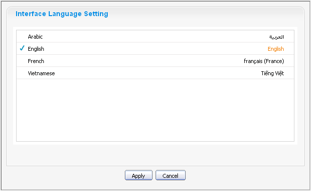
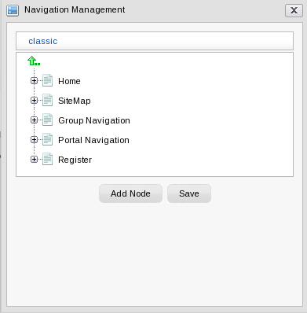
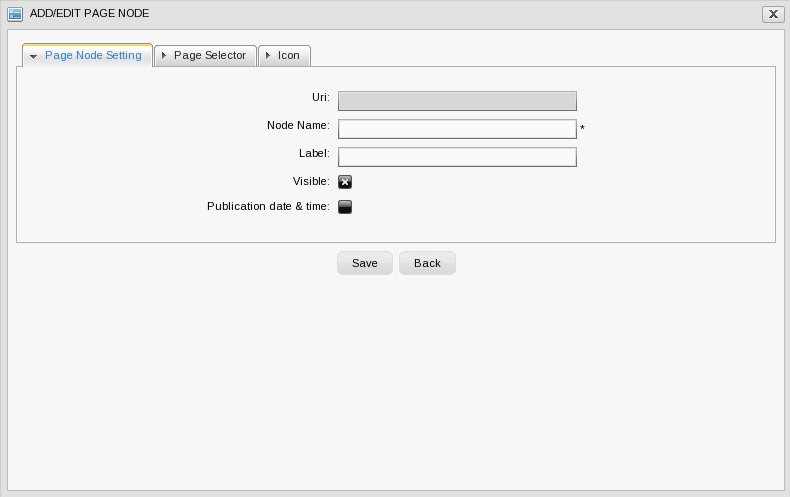

GateIn 3.2 allows users to pick the language of the user interface.
The priority of the interface language setting follows this hierarchy:
User's language
Browser's language
Portal's language
Note that users should pay attention to this order in order to change the language type appropriately.
You may switch the interface language in various places as follows:
You may set the interface language for your account alone and not for the entire Portal as follows:
Open up the Start menu and click on Change Language :

The Interface Language Setting window lists all available languages installed in the Portal:
Click on the desired language. The associated native word is highlighted.
Click Apply to save your change. The site should refresh and display its attributes in the language you've just chosen.
There are two modes to set the interface language for a specific user.
- Public Mode
When accessing the portal in Public Mode, the interface language is dictated by the language setting of your web browser.
If you have set the language of your browser to one that GateIn 3.2 does not support, the displaying language will be the language set at the Portal level (see above).
- Private Mode
The interface language in Private Mode is set when registering each user. See step four of the process to register a new account Section 4.1, “Register New Accounts”.
GateIn 3.2 supports Right to Left (RTL) languages.
The Account Portlet
The Application Registry Portlet
The Organization Portlet:
GateIn 3.2 supports a multi-language environment for your portal allowing you to internationalize any menu entry on the navigation.
As the navigation bar is composed of nodes, you have to modify the display names of the nodes to enable this. Instead of entering the display name of the node in a defined language (English, for example) you have to use a language-neutral 'resource key'.
This resource key is then used to define the label that is shown for that node on the navigation bar, the menu and the breadcrumb.
The resource key format is: #{key}
The resource key can contain any text that you consider appropriate to satisfy your business needs. It should, however, be human-readable and must not contain spaces.
There are two ways to create a key for a node:
Open the Site Editor menu and pick Add New Page.
Enter a name for this new page
Enter a resource key in the Display Name field.

Click Next. On the next screen you may define a page layout out of existing templates.
Click Next to finalize the page creation with portlets for instance.
Click on Site in the Toolbar then Edit Navigation
Click on Add Node
The Create/Edit node dialog appears. Enter a resource key in the Label field

Reusing Keys
You can reuse the same resource key in several nodes.